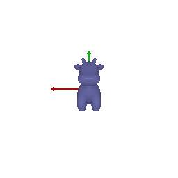
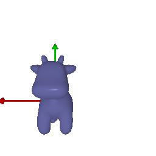

cow mesh from many continously changing viewpoints.

gif with a dolly zoom effect

a 360-degree gif animation of a tetrahedron with 4 vertices and 4 triangle faces

a 360-degree gif animation of a cube with 8 vertices and 12 triangle faces

color1 = [0.2, 0.6, 0.2] # green
color2 = [0.2, 0.4, 0.9] # blue

R_relative1: rotate the cow clockwise 90 degrees around the positive z-axis

T_relative2: moving the cow 2 units along the positive z-axis
T_relative3: move left by 0.5, move down by 0.5, move front by 0.05
R_relative4: rotate the cow -90 degrees along the positive y-axie
T_relative4: move to the cow along x-axis by 3, by z-axis by 3

1. The point cloud corresponding to the first image

2. The point cloud corresponding to the second image

3. The point cloud corresponding to the union of the first 2 point clouds

a 360-degree gif of the torus point cloud

a 360-degree gif of a new object, a spiral surface

a 360-degree gif of the torus mesh

a 360-degree gif of a new opject, a tori

Tradeoffs:
Speed: rendering as a mesh is faster than rendering as a pointcloud
Quality: however, rendering as a pointcloud can be more precise than as a mesh
Easy of use: rendering as a pointcloud, in terms of definition and formula, is more straightforward
Memory: rendering as a pointcloud is more memory-intensive
rendering a watch tower using
(1) a jpg as texture
(2) custom gradient color
(3) and applying Dolly effect

Sample a face with probability proportional to the area of the face
Sample a random barycentric coordinate uniformly
Compute the corresponding point using baricentric coordinates on the selected face.
original

10 points

100 points

1000 points

10000 points